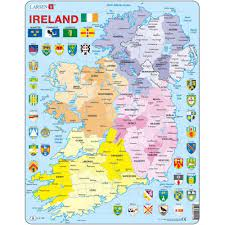

Ceci signifiait que la plupart des Irlandais avaient besoin de parler anglais. L'anglais était la langue du futur et de l'opportunité économique. L'Irlandais était le passé et la langue d'une île pauvre qui ne pouvait pas les soutenir. Le deuxième événement majeur a été le développement de l'éducation en anglais.
L'Irlande du Nord est un des pays constitutifs (nations constitutives) appartenant au Royaume-Uni, dont le gouvernement siège à Stormont et est représenté par l'Assemblée d'Irlande du Nord.